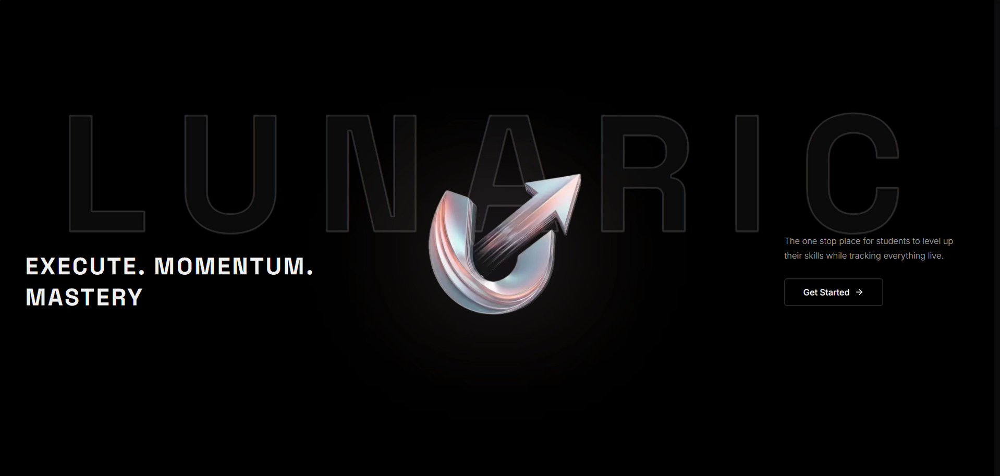
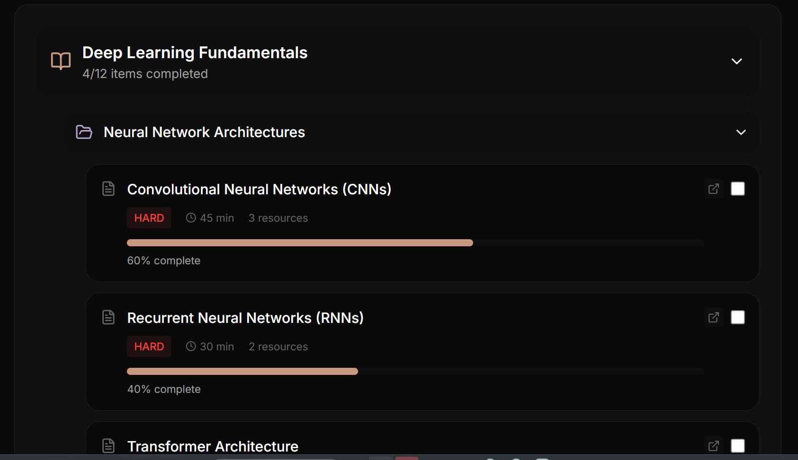
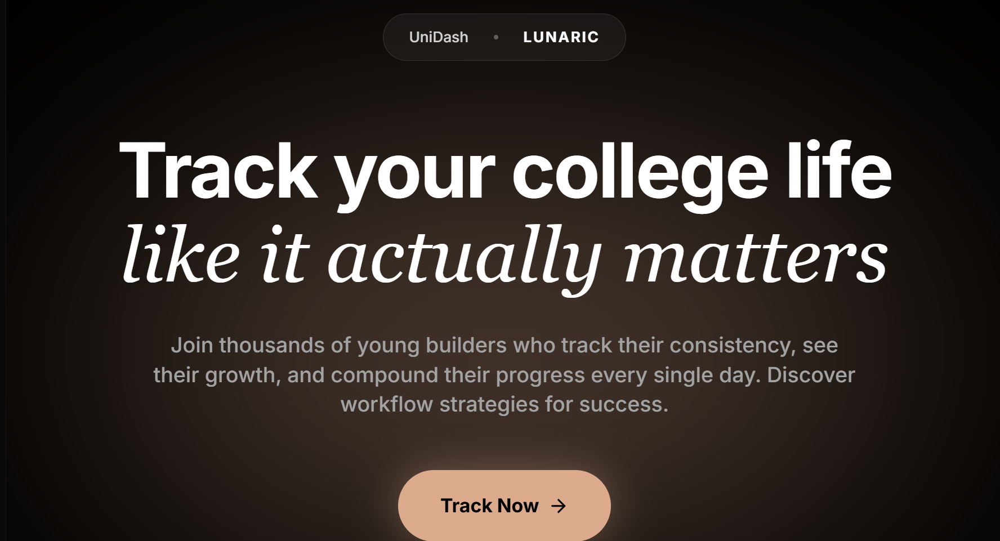
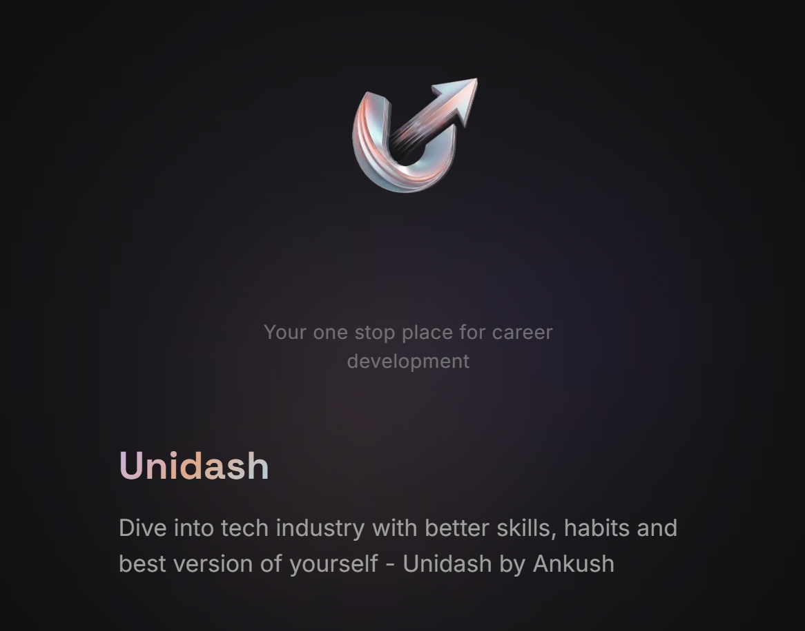

Students struggle with inconsistency, lack of direction, and no clear way to measure real skill growth, leading to incomplete learning and low mastery.
A skill-building platform that drives consistent execution, builds learning momentum, and tracks real-time progress to ensure users move toward mastery.Built a mobile-first website to showcase artwork and allow direct purchase inquiries.




Improved consistency and discipline in learning, Faster skill acquisition through execution, Clear visibility of progress and mastery level, Reduced procrastination and drop-off rates.
Making users actually execute, not just browse, Designing meaningful “progress” (not fake percentages), Keeping engagement high over time, Avoiding complexity while still being useful.
AI-driven personalized learning paths, Gamification (rewards, streaks, competition), Community accountability and peer learning, Integration with real-world projects and portfolios, Advanced performance analytics.